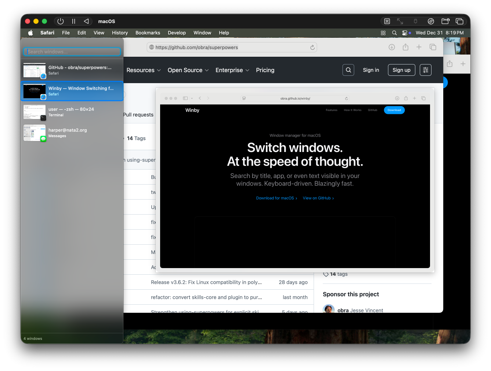
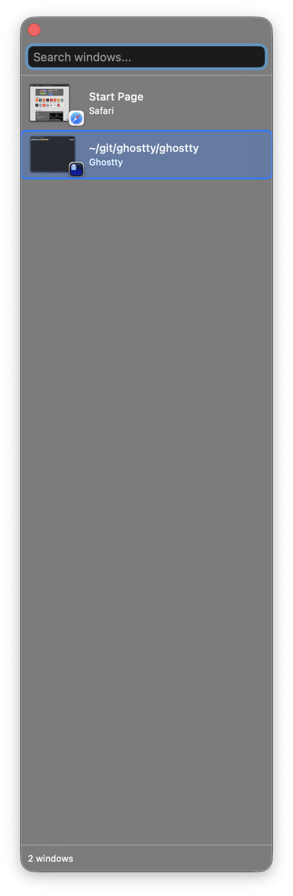

Window switcher for macOS
Search by title, app name, or text visible in your windows. All from the keyboard.

Every feature designed for fast window switching.
Type to filter windows by title or app name. Fuzzy matching handles typos and partial words.
See window thumbnails before switching. Preview the selected window in full size.
Search by text visible in windows using OCR. Find windows by what's displayed in them.
Arrow keys to navigate, Return to switch, Escape to dismiss. Your hands stay on the keyboard.
Use ⌘⇧Space or set your own shortcut. Replace ⌘Tab for seamless switching.
Starts at login and lives in your menu bar. Available instantly when you need it.
All your windows with live previews

Type to filter and find any window
Winby appears with your window list.
Search to filter or use arrow keys.
Switch to the selected window.
No network connections. Nothing written to disk.
Winby never connects to the internet. All window switching, search, and OCR works entirely on your device.
Screenshots and OCR results are cached in RAM only. Nothing is ever saved to disk.
Content search uses Apple's Vision framework. All text recognition happens locally—nothing leaves your Mac.
1Password, Bitwarden, and other password managers are shown but never screenshotted. Your secrets stay secret.
No analytics, no tracking, no usage data. The only network request is optional update checks via Sparkle.
The entire codebase is on GitHub. Verify exactly what Winby does—no hidden behavior.
Free and open source. Requires macOS 14.0 or later.